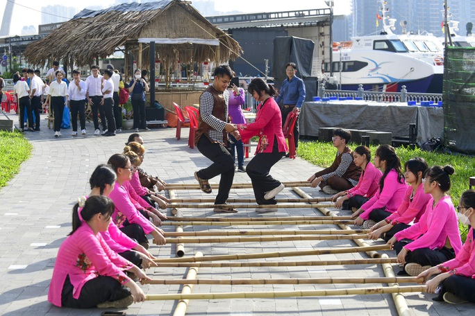

TP.HCM nghỉ lễ Quốc khánh 2-9 trong 4 ngày
Thứ năm, 20/8/2022, 17:54 (GMT+7)
Theo đó, cán bộ, công chức, viên chức và người lao động của các cơ quan hành chính, sự nghiệp, tổ chức chính trị, tổ chức chính trị - xã hội được nghỉ lễ Quốc khánh năm 2023 từ thứ sáu ngày 1-9 đến hết thứ hai ngày 4-9. Đợt nghỉ này bao gồm 2 ngày nghỉ lễ Quốc khánh, 1 ngày nghỉ hằng tuần và 1 ngày nghỉ bù ngày nghỉ hằng tuần theo quy định tại khoản 3, điều 111, Bộ Luật Lao động. Các cơ quan, đơn vị không thực hiện lịch nghỉ cố định thứ bảy và chủ nhật hàng tuần thì căn cứ vào chương trình, kế hoạch cụ thể của đơn vị để bố trí lịch nghỉ phù hợp, đúng pháp luật. Các cơ quan, đơn vị, xí nghiệp, trường học, bệnh viện, các đơn vị lực lượng vũ trang và hộ dân treo cờ Tổ quốc trong các ngày nghỉ lễ trên.
UBND thành phố giao chủ tịch UBND TP Thủ Đức, quận, huyện; thủ trưởng các cơ quan, đơn vị vận động, nhắc nhở, hướng dẫn treo cờ Tổ quốc ở địa bàn dân cư, các đơn vị thuộc quyền quản lý. Đồng thời bố trí sắp xếp các bộ phận làm việc hợp lý để giải quyết công việc liên tục, đảm bảo tốt công tác phục vụ tổ chức, nhân dân; bố trí lực lượng trực bảo đảm an ninh trật tự, phòng, chống cháy nổ, an toàn cơ quan, đơn vị và các khu vui chơi công cộng. Tiếp tục hướng dẫn, kiểm tra, giám sát thực hiện phòng, chống dịch bệnh trên địa bàn, đơn vị thuộc quyền quản lý theo quy định. Sở Tài nguyên và Môi trường chủ trì, phối hợp các đơn vị, địa phương thực hiện tốt công tác vận động nhân dân, các cơ quan, đơn vị, giữ gìn vệ sinh tại khu dân cư, chợ, trường học, công sở, xí nghiệp và các tuyến đường, làm đẹp các khu vực công sở, mặt tiền nhà phố; thực hiện nếp sổng văn minh đô thị.
Giới thiệu
Tell Ur Mom II - Winno ft. Heily「Cukak Remix」/ Audio Lyrics Video
Follow Me

Liên hệ
Điện thoại: 0987654321
Email: web1013@dinhnt.com